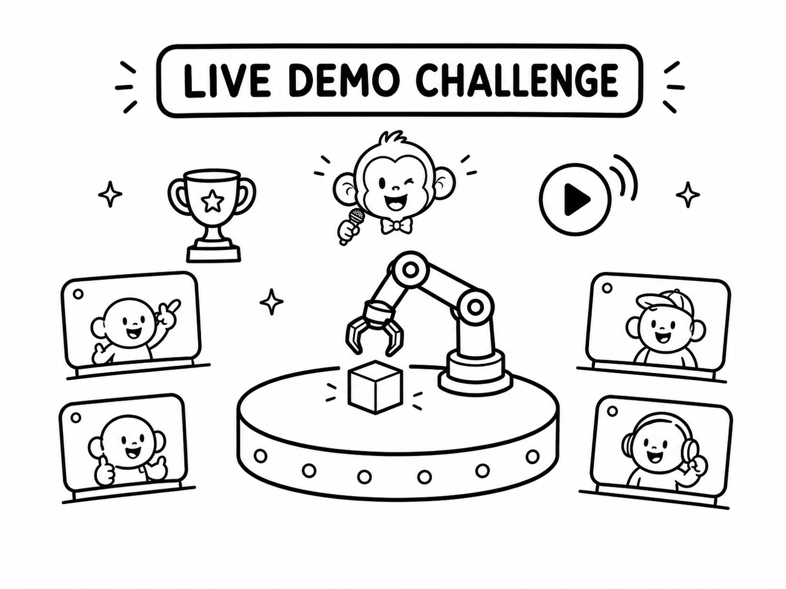
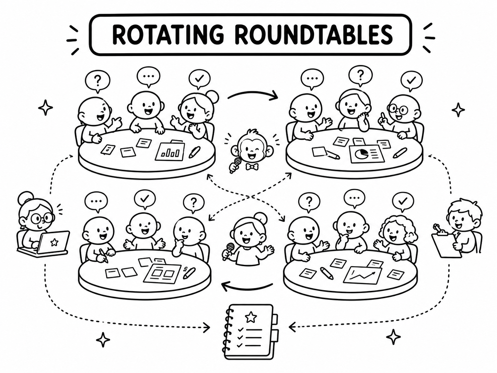
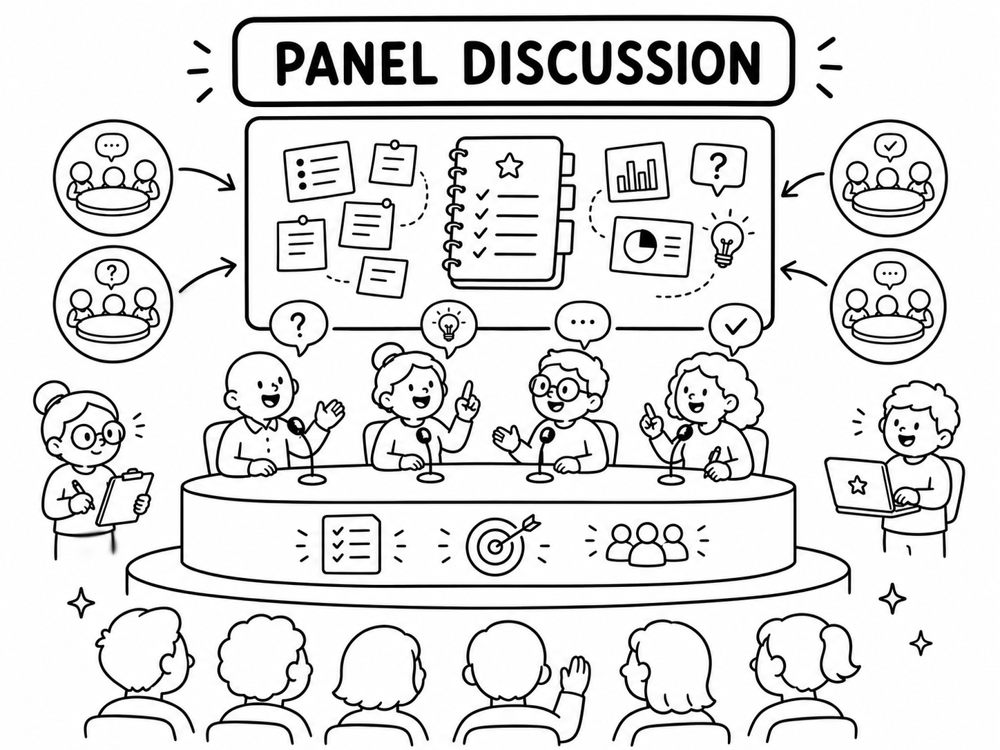

Invited Speakers
The workshop features four committed invited speakers spanning reconstruction, simulation, and robot learning.
CoRL 2026 Workshop
Physical Fidelity in Real2Sim for Robot Learning
Robot learning increasingly gets its training and evaluation environments through real2sim: scenes and objects reconstructed from real images or video, very often in-the-wild human video, into assets a robot can act in. The whole approach rests on one assumption: that a world rebuilt from real observation is faithful enough for a policy trained or tested in it to still work on the real robot.
In the in-the-wild setting where this would help the most, we lack a general, transfer-predictive way to tell whether that assumption holds. The strongest reconstruction models may return geometry and appearance that look right, while still lacking metric scale, separated manipulable parts, collision geometry, articulation, mass, friction, and contact behavior.
This workshop brings together researchers from 3D and 4D reconstruction, physics-based simulation, and robot policy learning around one concrete question: when a world is reconstructed from a real image or video and cannot be checked against ground-truth physics, what makes it trustworthy enough for a robot to act in, and can we predict real-world policy transfer before we deploy?
The workshop is a working session rather than a sequence of talks. Its output will be a community position paper, a first draft of a transfer-oriented fidelity protocol, and a public benchmark and leaderboard seeded by the live demo challenge.
The workshop is organized around four research questions from the final proposal.
When a world comes from a real image or human video, a ground-truth mesh and reliable pose are both missing. Which signal can stand in for ground truth: observable surface and contact behavior, the original human demonstration, or minimal held-out or interventional robot signals?
What must a reconstruction expose before a robot can use it: scale, separated manipulable parts, collision geometry, articulation, mass, friction, and other physical parameters?
An agentic or closed-loop system could choose what to reconstruct, estimate physical parameters, judge when a world is good enough, and direct robot interaction. What held-out, robot-collected, or interventional signal can certify such a world?
Fidelity is never absolute. Can we define a task-conditioned notion of fidelity that predicts whether a given policy will transfer, and tells us where reconstruction and simulation effort pays off?
The workshop features four committed invited speakers spanning reconstruction, simulation, and robot learning.
The workshop is a working session: talks set up what each field can and cannot measure, while three interactive blocks turn the room's discussion into a shared fidelity rubric.

Four finalists run generated or reconstructed worlds through shared challenge infrastructure. Each demo shows the asset, recovered physical parameters, and a fixed robot task in simulation, paired with prerecorded real-robot footage so the room can judge whether simulated behavior predicts transfer.

Attendees split across four tables, each owning one research question. Invited speakers rotate between tables so every group works through its question with each speaker. Organizers record arguments, proposed metrics, failure cases, and open disagreements into a shared document for the panel.

The invited speakers and organizers take the shared roundtable document on stage and turn it into concrete open problems, a first transfer-oriented fidelity rubric, and next steps for the post-workshop position paper, public benchmark, and leaderboard seeded by the live challenge.
Morning half-day workshop. All times are tentative and will follow the final CoRL workshop schedule.
We invite short, non-archival papers of up to four pages excluding references. Submissions will be managed through OpenReview and reviewed double-blind in a single round without rebuttal. Papers already accepted at the CoRL 2026 main conference are not eligible. The two best accepted papers will be presented as spotlight talks, and the rest will appear as posters.
The paper track runs alongside the live demo challenge, a separate track in which teams submit agentic-generation or real2sim models rather than papers.
UCLA